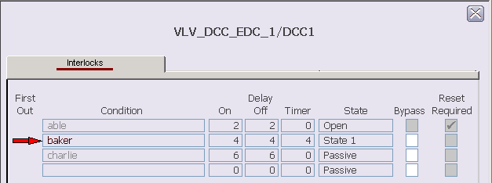
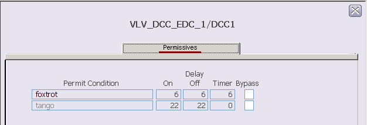
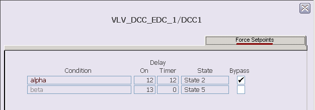

Discrete Control Condition function block faceplate (DCC_fp)
The Discrete Control Condition function block faceplate is a tabbed dialog. Each tab contains information on the configured conditions of each type. As many as 16 conditions of each type can be configured.
Interlocks

The Interlocks tab shows the configured interlock conditions. The
columns in the faceplate report the following information about the conditions:
- First Out - A red arrow next to a condition indicates it was the first condition that evaluated to True.
- Condition - The configured description for the condition. Inactive condition text is gray.
- Delay On - The time configured to delay the output of the condition when it evaluates to True.
- Delay Off - The time configured to delay the output of the condition when it evaluates to False.
- Delay Timer - Shows the Delay On or Off time remaining after a condition's state changes.
- State - The state to interlock to when this condition is True.
- Bypass - A check mark indicates the condition has been bypassed. Gray boxes indicate T_HIGHER_MNGn is True.
- Reset Required - Indicates if a reset is necessary to unlatch the condition after the condition's expression evaluates to False. When a condition that requires a reset becomes inactive, the Reset button appears. All of the boxes are gray to indicate that changes cannot be made from the faceplate.
Permissives

The Permissives tab shows the configured permissive conditions. The
columns in the faceplate report the following information about the conditions:
- Permit Condition - The configured description for the condition. Inactive condition text is gray.
- Delay On - The time configured to delay the output of the condition when it evaluates to True.
- Delay Off - The time configured to delay the output of the condition when it evaluates to False.
- Delay Timer - Shows the Delay On or Off time remaining after a condition's state changes.
- Bypass - a check mark indicates if the condition has been bypassed.
Force Setpoints

The Force Setpoints tab shows the configured force setpoint
conditions. The columns in the faceplate report the following information about
the conditions:
- Condition - The configured description for the condition. Inactive condition text is gray.
- Delay On - The time configured to delay the output of the condition when it evaluates to True.
- Delay Timer - Shows the Delay On or Off time remaining after a condition's state changes.
- State - The state of the condition when the condition is True.
- Bypass - A check mark indicates the condition has been bypassed.